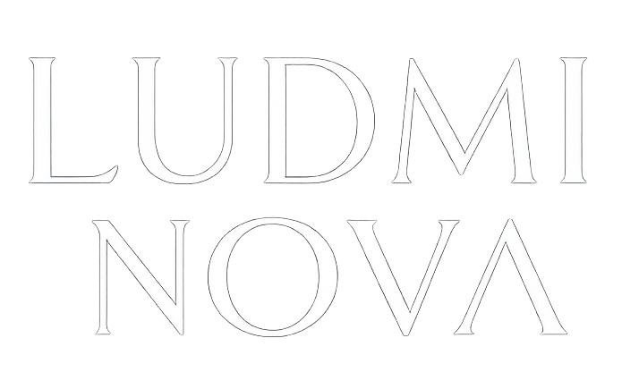
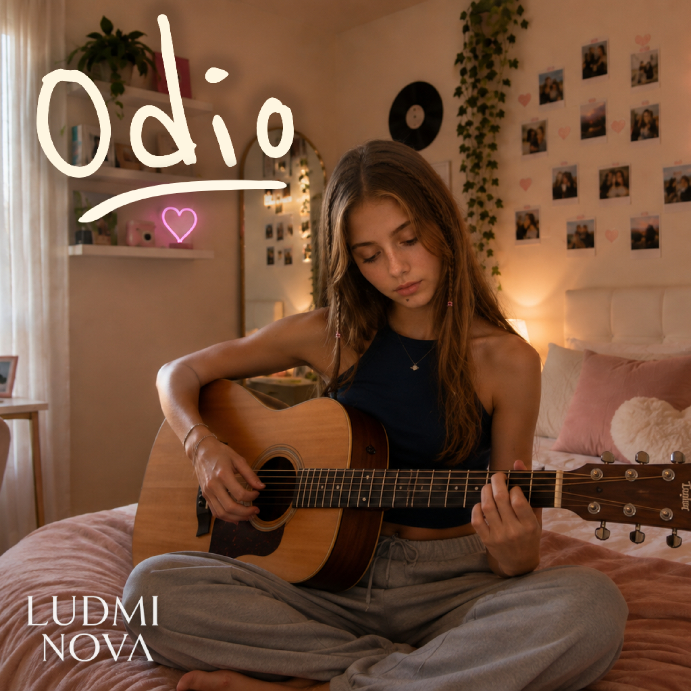

Odio y No me di cuenta ya disponibles
Escucha la música de Ludmi Nova en tu plataforma favorita y descubre sus nuevos lanzamientos.
Conecta
Redes oficiales
Disponible ahora
Música y lanzamientos

Bio
Ficha Nova
Ludmi Nova es el nombre artístico de Ludmila Antonova, cantautora pop nacida un 5 de octubre en Montreal, Canadá. Es hija de Aleksandr Antonov, de origen ruso, y Marina Valentini, argentina de ascendencia italiana. Vivió sus primeros diez años en Canadá, pasó parte de su adolescencia en México y, desde los 14 años, vive en Argentina.
Escribe canciones como quien llena las páginas de un diario: historias de amor, desencuentros, inseguridades y esos pequeños dramas que, con un poco de distancia, también pueden dar risa.
Cuando no está haciendo música, probablemente esté viendo un K-drama, sacando fotos de cosas que le parecieron lindas o comprando algo rosa que definitivamente no necesitaba.
Le gustan los vestidos, los moños, los perfumes, las flores y arreglarse incluso cuando no tiene ningún lugar especial al que ir. Tiene un gato blanco llamado Nube, que considera suyo aunque Nube probablemente tenga otra opinión.
Su planeta favorito es Saturno. No sabe demasiado de astronomía, pero sostiene que eso es completamente irrelevante.
🪐 El mundo es ficción. La música es real.
- Signo
- Libra ♎️
- Altura
- 1,58 m
- Color favorito
- Rosa cereza 🍒
- Comida favorita
- Pasta al pesto 🌿
- Manía
- Ponerse un poco de perfume aunque solo vaya al supermercado
- Talento inútil
- Llegar tarde por cambiar de outfit cuando ya estaba lista
Contacto
Prensa y colaboraciones
Para propuestas profesionales, campañas, prensa o colaboraciones digitales, déjame tu mensaje
Management: Roberto Diaz Schwab